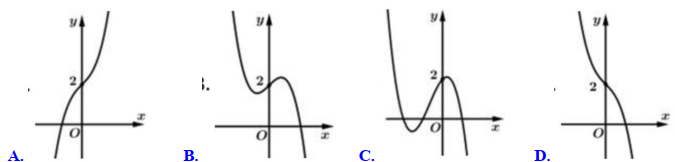
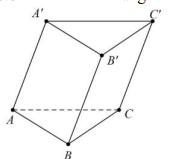
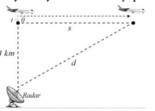
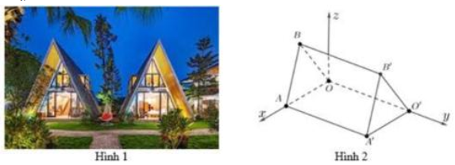
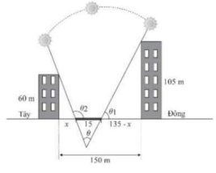

ĐỀ THI TOÁN - ĐỀ SỐ 48 HOT
Phần I: Trắc Nghiệm Nhiều Lựa Chọn
Tóm tắt kiến thức: Phương trình logarit
Phương trình \( \log_a b = c \Leftrightarrow b = a^c \). Với \( \log_3(x-1) = 4 \), ta có \( x-1 = 3^4 \).
Câu 1:
Nghiệm của phương trình \( \log_3(x-1) = 4 \) là:
Chọn đáp án:
Lời giải:
Ta có: \( \log_3(x-1) = 4 \Leftrightarrow x-1 = 3^4 \Leftrightarrow x-1 = 81 \Leftrightarrow x = 82 \).
Đáp án: C.
Tóm tắt kiến thức: Khoảng biến thiên
Khoảng biến thiên của mẫu số liệu ghép nhóm là hiệu giữa giá trị lớn nhất và nhỏ nhất của các khoảng.
Câu 2:
Một công ty cung cấp nước sạch thống kê lượng nước các hộ gia đình trong một khu vực tiêu thụ trong một tháng ở bảng sau:
| Lượng nước tiêu thụ (\( \mathrm{m}^3 \)) | \([3; 6)\) | \([6; 9)\) | \([9; 12)\) | \([12; 15)\) | \([15; 18)\) |
|---|---|---|---|---|---|
| Số hộ gia đình | 20 | 60 | 40 | 32 | 7 |
Chọn đáp án:
Lời giải:
Khoảng biến thiên của mẫu số liệu ghép nhóm là: \( 18 - 3 = 15 \mathrm{~m}^3 \).
Đáp án: B.
Tóm tắt kiến thức: Cấp số nhân
Trong cấp số nhân, \( u_n = u_1 \cdot q^{n-1} \). Công bội \( q = \frac{u_{n+1}}{u_n} \).
Câu 3:
Cho cấp số nhân \( (u_n) \) với \( u_1 = 2 \), \( u_2 = 8 \). Công bội của cấp số nhân đã cho bằng:
Chọn đáp án:
Lời giải:
Gọi công bội của cấp số nhân là \( q \).
Ta có: \( u_2 = u_1 \cdot q \Rightarrow q = \frac{u_2}{u_1} = \frac{8}{2} = 4 \).
Đáp án: C.
Tóm tắt kiến thức: Vectơ chỉ phương
Phương trình đường thẳng \( \frac{x-a}{m} = \frac{y-b}{n} = \frac{z-c}{p} \) có vectơ chỉ phương \( \vec{u} = (m; n; p) \).
Câu 4:
Trong không gian \( Oxyz \), cho đường thẳng \( (d): \frac{x-1}{3} = \frac{y-3}{2} = z-2 \). Vectơ nào dưới đây là một vectơ chỉ phương của đường thẳng \( (d) \)?
Chọn đáp án:
Lời giải:
Phương trình đường thẳng \( (d): \frac{x-1}{3} = \frac{y-3}{2} = \frac{z-2}{1} \) có vectơ chỉ phương là \( \vec{u} = (3; 2; 1) \).
Đáp án: A.
Tóm tắt kiến thức: Nguyên hàm và đạo hàm
Nếu \( F(x) \) là nguyên hàm của \( f(x) \), thì \( f(x) = F'(x) \). Đạo hàm của \( F(x) = 4x^3 + 1 \) là \( F'(x) = 12x^2 \).
Câu 5:
Cho hàm số \( F(x) = 4x^3 + 1 \) là một nguyên hàm của hàm số \( f(x) \) trên tập số thực \( \mathbb{R} \). Với \( C \) là hằng số. Khẳng định nào dưới đây là đúng?
Chọn đáp án:
Lời giải:
Ta có: \( F(x) = 4x^3 + 1 \) là nguyên hàm của \( f(x) \).
Do đó: \( f(x) = F'(x) = (4x^3 + 1)' = 12x^2 \).
Đáp án: C.
Tóm tắt kiến thức: Diện tích hình thang cong
Diện tích hình thang cong giới hạn bởi \( y = f(x) \), trục \( Ox \), và \( x = a \), \( x = b \): \( S = \int_a^b f(x) \, dx = F(b) - F(a) \), với \( F(x) \) là nguyên hàm của \( f(x) \).
Câu 6:
Cho hàm số \( F(x) = 4x^3 + 1 \) là một nguyên hàm của hàm số \( f(x) \) trên tập số thực \( \mathbb{R} \). Diện tích hình thang cong giới hạn bởi đồ thị hàm số \( y = f(x) \), trục \( Ox \), và hai đường thẳng \( x = 0 \), \( x = 4 \) bằng:
Chọn đáp án:
Lời giải:
Diện tích hình thang cong được tính bằng: \( \int_0^4 f(x) \, dx = F(x) \Big|_0^4 = F(4) - F(0) \).
Đáp án: C.
Tóm tắt kiến thức: Thể tích khối chóp
Thể tích khối chóp: \( V = \frac{1}{3} \cdot S_{\text{đáy}} \cdot h \). Với đáy là hình vuông cạnh \( a \), \( S_{\text{đáy}} = a^2 \).
Câu 7:
Cho khối chóp có đáy là hình vuông cạnh bằng 4 và chiều cao bằng 3. Tính thể tích \( V \) của khối chóp đã cho:
Chọn đáp án:
Lời giải:
Thể tích \( V \) của khối chóp có đáy là hình vuông cạnh bằng 4 và chiều cao bằng 3 là:
\( V = \frac{1}{3} \cdot 4^2 \cdot 3 = \frac{1}{3} \cdot 16 \cdot 3 = 16 \).
Đáp án: D.
Tóm tắt kiến thức: Tiệm cận ngang
Tiệm cận ngang của hàm số \( y = f(x) \): \( \lim_{x \to \pm \infty} f(x) = k \), phương trình tiệm cận là \( y = k \).
Câu 8:
Đường tiệm cận ngang của đồ thị hàm số \( y = 2 - \frac{1}{x-1} \) có phương trình là:
Chọn đáp án:
Lời giải:
Ta có: \( \lim_{x \to \pm \infty} \left( 2 - \frac{1}{x-1} \right) = 2 \).
Do đó, tiệm cận ngang là \( y = 2 \).
Đáp án: B.
Tóm tắt kiến thức: Tập xác định của hàm logarit
Hàm \( y = \log_a P(x) \) xác định khi \( P(x) > 0 \). Với \( y = \log x + \log (3-x) \), điều kiện là \( x > 0 \) và \( 3-x > 0 \).
Câu 9:
Tập xác định của hàm số \( y = \log x + \log (3-x) \) là:
Chọn đáp án:
Lời giải:
Hàm \( \log x + \log (3-x) \) xác định khi:
\( \left\{ \begin{array}{l} x > 0 \\ 3-x > 0 \end{array} \right. \Leftrightarrow \left\{ \begin{array}{l} x > 0 \\ x < 3 \end{array} \right. \)
Vậy tập xác định là \( (0; 3) \).
Đáp án: B.
Tóm tắt kiến thức: Đồ thị hàm số bậc ba
Hàm số \( y = ax^3 + bx^2 + cx + d \) có đồ thị là đường cong bậc ba. Tính chất đồng biến/nghịch biến được xác định từ đạo hàm \( y' \).
Câu 10:
Đồ thị hàm số \( y = -x^3 - x + 2 \) là đường cong nào trong bốn đường cong sau?

Chọn đáp án:
Lời giải:
Xét hàm số: \( y = -x^3 - x + 2 \).
Tập xác định: \( \mathbb{R} \).
Đạo hàm: \( y' = -3x^2 - 1 \), \( y' < 0, \forall x \in \mathbb{R} \).
Do đó, hàm số nghịch biến trên \( \mathbb{R} \), đồ thị đi xuống từ trái qua phải. Đường cong ở phương án D thỏa mãn.
Đáp án: D.
Tóm tắt kiến thức: Góc giữa hai vectơ
Góc giữa hai vectơ \( \vec{a} \) và \( \vec{b} \): \( \cos \theta = \frac{\vec{a} \cdot \vec{b}}{|\vec{a}| \cdot |\vec{b}|} \). Trong lăng trụ tam giác đều, các cạnh đáy tạo góc 60°.
Câu 11:
Cho hình lăng trụ \( ABC.A'B'C' \) có hai đáy là các tam giác đều như hình vẽ. Góc giữa hai vectơ \( \overrightarrow{BC} \) và \( \overrightarrow{A'C'} \) bằng:

Chọn đáp án:
Lời giải:
Vì \( A'C' \parallel AC \), nên \( \angle (A'C', BC) = \angle (AC, BC) = 60^\circ \) (vì tam giác \( ABC \) đều).
Đáp án: C.
Tóm tắt kiến thức: Phương trình mặt phẳng
Mặt phẳng qua điểm \( M(x_0; y_0; z_0) \), vuông góc với đường thẳng có vectơ chỉ phương \( \vec{u} = (a; b; c) \), có phương trình: \( a(x-x_0) + b(y-y_0) + c(z-z_0) = 0 \).
Câu 12:
Phương trình nào dưới đây là phương trình mặt phẳng đi qua điểm \( M(3; -1; 1) \) và vuông góc với đường thẳng \( \Delta: \frac{x+1}{3} = \frac{y-2}{-2} = \frac{z+3}{1} \)?
Chọn đáp án:
Lời giải:
Mặt phẳng cần tìm có vectơ pháp tuyến là \( \vec{n} = \vec{u}_\Delta = (3; -2; 1) \).
Phương trình mặt phẳng qua \( M(3; -1; 1) \): \( 3(x-3) - 2(y+1) + (z-1) = 0 \).
Rút gọn: \( 3x - 9 - 2y - 2 + z - 1 = 0 \Leftrightarrow 3x - 2y + z - 12 = 0 \).
Đáp án: C.
Phần II: Trắc Nghiệm Đúng/Sai
Tóm tắt kiến thức: Tiệm cận và tâm đối xứng
Tiệm cận đứng: \( \lim_{x \to a} f(x) = \pm \infty \). Tiệm cận xiên: \( y = mx + n \) khi \( m = \lim_{x \to \infty} \frac{f(x)}{x} \), \( n = \lim_{x \to \infty} (f(x) - mx) \). Tâm đối xứng là giao điểm tiệm cận đứng và xiên.
Câu 13:
Cho hàm số \( f(x) = \frac{2x^2 + x - 1}{x + 2} \). Xét các phát biểu sau:
Chọn đáp án cho từng phát biểu:
a)
b)
c)
d)
Lời giải:
a) Đúng. \( \lim_{x \to -2^-} f(x) = -\infty \), \( \lim_{x \to -2^+} f(x) = +\infty \). Vậy \( x = -2 \) là tiệm cận đứng.
b) Sai. Ta có: \( f(x) = 2x - 3 + \frac{5}{x+2} \). Tiệm cận xiên: \( y = 2x - 3 \), không phải \( y = 2x + 3 \).
c) Sai. Tâm đối xứng là giao điểm của tiệm cận đứng \( x = -2 \) và tiệm cận xiên \( y = 2x - 3 \): \( y = 2(-2) - 3 = -7 \). Vậy tâm là \( I(-2; -7) \), không phải \( (-2; -1) \).
d) Sai. Tâm đối xứng \( I(-2; -7) \): \( d(I, Ox) = |-7| = 7 \), \( d(I, Oy) = |-2| = 2 \). Tổng khoảng cách: \( 7 + 2 = 9 \neq 3 \).
Đáp án: a) Đúng, b) Sai, c) Sai, d) Sai.
Tóm tắt kiến thức: Chuyển động trong không gian
Phương trình đường thẳng qua \( A(x_0; y_0; z_0) \), vectơ chỉ phương \( \vec{u} = (a; b; c) \): \( \frac{x-x_0}{a} = \frac{y-y_0}{b} = \frac{z-z_0}{c} \). Quãng đường: \( s = v \cdot t \).
Câu 14:
Trong không gian với hệ tọa độ \( Oxyz \), một cabin cáp treo xuất phát từ điểm \( A(10; 3; 0) \) và chuyển động thẳng đều theo đường cáp có vectơ chỉ phương là \( \vec{u} = (2; -2; 1) \) với tốc độ là \( 4,5 \, \mathrm{m/s} \) (đơn vị trên mỗi trục tọa độ là mét, hướng chuyển động cùng chiều với hướng vectơ \( \vec{u} \)). Xét các phát biểu sau:
Chọn đáp án cho từng phát biểu:
a)
b)
c)
d)
Lời giải:
a) Sai. Đường cáp qua \( A(10; 3; 0) \), vectơ chỉ phương \( \vec{u} = (2; -2; 1) \), phương trình: \( \frac{x-10}{2} = \frac{y-3}{-2} = \frac{z}{1} \), không phải \( \frac{x+10}{2} \).
b) Đúng. Tốc độ \( 4,5 \, \mathrm{m/s} \), quãng đường sau \( t \, \mathrm{s} \): \( 4,5t \, \mathrm{m} \).
c) Sai. \( \overrightarrow{AM} = k(2; -2; 1) \), \( |\overrightarrow{AM}| = k \sqrt{9} = 3k = 4,5t \Rightarrow k = \frac{3t}{2} \).
\( \overrightarrow{AM} = \left(3t; -3t; \frac{3t}{2}\right) \). Tọa độ \( M \): \( (3t + 10; -3t + 3; \frac{3t}{2}) \), không phải \( (9t + 10; -9t + 3; t) \).
d) Đúng. \( x_B = 550 \Rightarrow 3t + 10 = 550 \Rightarrow t = 180 \). Tọa độ \( B(550; -537; 270) \).
\( AB = \sqrt{(550-10)^2 + (-537-3)^2 + (270-0)^2} = 810 \, \mathrm{m} \).
Đáp án: a) Sai, b) Đúng, c) Sai, d) Đúng.
Tóm tắt kiến thức: Xác suất
Xác suất: \( P(A) = \frac{\text{số trường hợp thuận lợi}}{\text{tổng số trường hợp}} \). Xác suất có điều kiện: \( P(A|B) = \frac{P(A \cap B)}{P(B)} \).
Câu 15:
Một lô hàng có 6 sản phẩm tốt, 4 sản phẩm xấu. Lấy ngẫu nhiên không hoàn lại từng sản phẩm cho đến khi lấy được 2 sản phẩm tốt thì dừng lại. Gọi \( A \): “Lần thứ nhất lấy được sản phẩm tốt”; \( B \): “Dừng lại ở lần lấy thứ 4”. Xét các phát biểu sau:
Chọn đáp án cho từng phát biểu:
a)
b)
c)
d)
Lời giải:
a) Sai. \( P(A) = \frac{6}{10} = 0,6 \).
b) Sai. Xác suất: \( \frac{4}{10} \cdot \frac{3}{9} \cdot \frac{6}{8} \cdot \frac{5}{7} = \frac{1}{14} \neq \frac{1}{7} \).
c) Đúng. \( P(B) = \frac{6}{10} \cdot \frac{4}{9} \cdot \frac{3}{8} \cdot \frac{5}{7} + \frac{4}{10} \cdot \frac{3}{9} \cdot \frac{6}{8} \cdot \frac{5}{7} + \frac{4}{10} \cdot \frac{6}{9} \cdot \frac{3}{8} \cdot \frac{5}{7} = \frac{3}{14} \).
d) Sai. \( P(AB) = \frac{6}{10} \cdot \frac{4}{9} \cdot \frac{3}{8} \cdot \frac{5}{7} = \frac{1}{14} \). \( P(A|B) = \frac{P(AB)}{P(B)} = \frac{\frac{1}{14}}{\frac{3}{14}} = \frac{1}{3} \neq \frac{2}{3} \).
Đáp án: a) Sai, b) Sai, c) Đúng, d) Sai.
Tóm tắt kiến thức: Chuyển động và tích phân
Quãng đường: \( s(t) = \int v(t) \, dt \). Khoảng cách trong không gian: \( d = \sqrt{x^2 + y^2 + z^2} \). Tích phân xác định biểu diễn quãng đường hoặc diện tích.
Câu 16:
Máy bay bay thẳng qua một trạm radar tại thời điểm \( t = 0 \). Máy bay duy trì độ cao 4 km và bay với tốc độ thay đổi theo thời gian được mô phỏng qua hàm số \( v(t) = 120 - 0,0005(t-4)^2 \, \mathrm{m/s} \) (\( 0 \leq t \leq 200 \)). Gọi \( d \) là khoảng cách từ trạm radar đến máy bay và \( s \) là khoảng cách theo phương ngang mà máy bay đã bay kể từ khi nó bay qua trạm radar (tham khảo hình vẽ). Xét các phát biểu sau:

Chọn đáp án cho từng phát biểu:
a)
b)
c)
d)
Lời giải:
a) Sai. \( v(0) = 120 - 0,0005(0-4)^2 = 119,992 \, \mathrm{m/s} \).
b) Sai. \( s(t) = \int_0^t v(t) \, dt \). Tại \( t = 6 \): \( s(6) \approx 719,988 \, \mathrm{m} \).
c) Sai. Theo định lý Pythagore: \( d(t) = \sqrt{\left( \int_0^t v(t) \, dt \right)^2 + 4000^2} = \sqrt{s(t)^2 + 1,6 \cdot 10^7} \), không phải \( \sqrt{\int_0^t v^2(t) \, dt + 1,6 \cdot 10^7} \).
d) Đúng. Tại \( t = 180 \, \mathrm{s} \): \( d(180) \approx 21 \, \mathrm{km} > 20 \, \mathrm{km} \), máy bay ngoài vùng quan sát.
Đáp án: a) Sai, b) Sai, c) Sai, d) Đúng.
Phần III: Trắc Nghiệm Trả Lời Ngắn
Tóm tắt kiến thức: Khoảng cách trong hình lăng trụ
Khoảng cách từ điểm đến mặt phẳng: Tìm đường vuông góc từ điểm đến mặt phẳng, độ dài đoạn vuông góc là khoảng cách cần tìm.
Câu 17:
Cho hình lăng trụ đứng \( ABCD.A'B'C'D' \) có đáy \( ABCD \) là hình thoi, \( AB = AC \), \( \angle A'C'A = 30^\circ \) và \( AA' = 2 \). Khoảng cách từ điểm \( A \) đến mặt phẳng \( (BCC'B') \) bằng bao nhiêu?
Nhập đáp án:
Lời giải:
Kẻ \( AH \perp BC \) (\( H \in BC \)). Suy ra \( d(A, (BCC'B')) = AH \).
Trong \( \triangle A'C'A \) vuông tại \( A \): \( \tan \angle A'C'A = \frac{AA'}{AC} \Rightarrow AC = \frac{AA'}{\tan 30^\circ} = \frac{2}{\sqrt{3}/3} = 2\sqrt{3} \).
Vì \( ABCD \) là hình thoi, \( AB = AC \Rightarrow \triangle ABC \) đều.
Chiều cao tam giác đều: \( AH = \frac{AB \cdot \sqrt{3}}{2} = \frac{2\sqrt{3} \cdot \sqrt{3}}{2} = 3 \).
Đáp án: 3.
Tóm tắt kiến thức: Hình học không gian
Độ dài cạnh trong lăng trụ: Sử dụng tọa độ để tính khoảng cách giữa các điểm. Tổng độ dài các cạnh đặc trưng được tính từ tọa độ.
Câu 18:
Những cây lều gỗ trong Hình 1 được phác thảo dưới dạng một hình lăng trụ đứng tam giác \( AOB.A'O'B' \) như trong Hình 2. Với hệ trục tọa độ \( Oxyz \) thể hiện như Hình 2 (đơn vị đo lấy theo cm), hai điểm \( A' \) và \( B' \) có tọa độ lần lượt là \( (240; 450; 0) \) và \( (120; 450; 300) \). Mỗi cây lều gỗ có chiều dài là bao nhiêu đơn vị?

Nhập đáp án:
Lời giải:
Điểm \( A'(240; 450; 0) \): \( a = A'A = 450 \, \mathrm{cm} \), \( b = A'O' = 240 \, \mathrm{cm} \).
\( \overrightarrow{A'B'} = (-120; 0; 300) \), \( A'B' = \sqrt{(-120)^2 + 0^2 + 300^2} = 60\sqrt{29} \approx 323 \, \mathrm{cm} \).
\( O'O = A'A = 450 \, \mathrm{cm} \), \( O'(0; 450; 0) \).
\( \overrightarrow{O'B'} = (120; 0; 300) \), \( O'B' = \sqrt{120^2 + 0^2 + 300^2} = 60\sqrt{29} \approx 323 \, \mathrm{cm} \).
Tổng chiều dài: \( a + b + c = 450 + 240 + 323 = 1013 \, \mathrm{cm} \).
Đáp án: 1013.
Tóm tắt kiến thức: Chuyển động tròn
Chuyển động công: Quãng đường tâm đĩa di được bằng chu vi đường tròn lớn chia cho chu vi đĩa nhỏ, từ đó suy ra số vòng quay và vị trí tiếp xúc.
Câu 19:
Hình minh họa bên cạnh cho biết một đồng hồ hình tròn có bán kính 20 cm và một đĩa tròn có bán kính 10 cm tiếp xúc ngoài với mặt đồng hồ tại vị trí 12 giờ. Trên đĩa có vẽ một mũi tên, ban đầu chỉ theo hướng thẳng đứng hướng lên. Đĩa bắt đầu lăn theo chiều kim đồng hồ xung quanh mặt đồng hồ. Khi mũi tên lăn tiếp theo chỉ theo hướng thẳng đứng hướng lên thì đĩa sẽ tiếp xúc với mặt đồng hồ tại thời điểm mấy giờ?

Nhập đáp án:
Lời giải:
Quãng đường đĩa di được: \( 2\pi (20 + 10) = 60\pi \, \mathrm{cm} \).
Một vòng quay của đĩa: \( 2\pi \cdot 10 = 20\pi \, \mathrm{cm} \).
Số vòng quay: \( \frac{60\pi}{20\pi} = 3 \).
Đồng hồ có 12 giờ, đĩa quay 1 vòng thì tiếp xúc tại: \( \frac{12}{3} = 4 \) giờ.
Đáp án: 4.
Tóm tắt kiến thức: Thể tích khối tròn xoay
Thể tích khối tròn xoay: \( V = \pi \int_a^b [f(x)]^2 \, dx \). Với hình elip và cung tròn, tính thể tích bằng công thức hoặc tích phân.
Câu 20:
Một vật trang trí có dạng khối tròn xoay được tạo thành khi quay miền \( (H) \) (phần gạch sọc trong hình vẽ bên) quanh trục \( AC \). Biết rằng \( AC = 5 \, \mathrm{cm} \), \( BC = 3 \, \mathrm{cm} \), miền \( (H) \) được giới hạn bởi đường thẳng \( AB \), cung tròn \( BD \) có tâm \( C \), đường cong elip \( AD \) có trục \( AC \) và \( CD \). Thể tích của vật trang trí bằng bao nhiêu cm khối (kết quả làm tròn đến hàng phần mười)?

Nhập đáp án:
Lời giải:
Gọi \( V_1 \): Thể tích khi quay \( AD \) quanh trục \( Ox \).
\( V_2 \): Thể tích khi quay \( BD \) quanh trục \( Ox \).
Thể tích cần tìm: \( V = V_1 - V_2 \).
\( V_1 \): Thể tích nửa khối elip, \( a = \frac{5}{2} \), \( b = \frac{3}{2} \): \( V_1 = \frac{1}{2} \cdot \frac{4}{3} \pi \cdot 5 \cdot 3^2 = 30\pi \).
\( V_2 \): Nửa khối cầu, \( R = BC = 3 \): \( V_2 = \frac{1}{2} \cdot \frac{4}{3} \pi \cdot 3^3 = 18\pi \).
\( V = 30\pi - 18\pi = 12\pi \approx 37,7 \, \mathrm{cm}^3 \).
Đáp án: 37,7.
Tóm tắt kiến thức: Xác suất có điều kiện
Xác suất có điều kiện: \( P(A|B) = \frac{P(A \cap B)}{P(B)} \). Sử dụng công thức Bayes để tính xác suất ngược.
Câu 21:
Có hai hộp bóng bàn, các quả bóng bàn có kích thước và hình dạng như nhau. Hộp thứ nhất có 3 quả bóng bàn màu trắng và 2 quả bóng bàn màu vàng. Hộp thứ hai có 8 quả bóng bàn màu trắng và 6 quả bóng bàn màu vàng. Lần thứ nhất: Lấy ngẫu nhiên 4 quả bóng bàn ở hộp thứ nhất. Biết rằng lấy được quả bóng bàn màu vàng ở lần thứ hai, tính xác suất ở lần thứ nhất lấy được số quả bóng bàn màu trắng và màu vàng bằng nhau (làm tròn kết quả đến hàng phần trăm).
Nhập đáp án:
Lời giải:
Gọi \( A \): Lấy được bóng vàng từ hộp thứ hai.
\( B \): Lấy 4 bóng ở hộp thứ nhất, trong đó 1 vàng, 3 trắng.
\( \bar{B} \): Lấy 4 bóng ở hộp thứ nhất, trong đó 2 vàng, 2 trắng.
\( P(B) = \frac{C_2^1 \cdot C_3^3}{C_5^4} = \frac{2}{5} \), \( P(\bar{B}) = \frac{C_2^2 \cdot C_3^2}{C_5^4} = \frac{3}{5} \).
\( P(A|B) = \frac{7}{18} \), \( P(A|\bar{B}) = \frac{8}{18} \).
\( P(A) = \frac{2}{5} \cdot \frac{7}{18} + \frac{3}{5} \cdot \frac{8}{18} = \frac{19}{45} \).
\( P(\bar{B}|A) = \frac{P(\bar{B}) \cdot P(A|\bar{B})}{P(A)} = \frac{\frac{3}{5} \cdot \frac{8}{18}}{\frac{19}{45}} \approx 0,63 \).
Đáp án: 0,63.
Tóm tắt kiến thức: Tối ưu hóa góc
Để tối ưu góc \( \theta \), tìm cực trị của hàm \( \tan \theta \) bằng cách lấy đạo hàm và xét bảng biến thiên.
Câu 22:
Một vườn hoa có chiều dài 15 mét được xây dựng giữa 2 tòa nhà ở 2 hướng Đông và Tây. Biết rằng 2 tòa nhà cách nhau 150 mét và độ cao của tòa nhà hướng Đông là 105 mét, độ cao của tòa nhà hướng Tây là 60 mét. Người ta tìm địa điểm trồng hoa cách tòa nhà ở hướng Tây \( x \) (mét) để thời gian chiếu sáng vào vườn hoa là lớn nhất. Giá trị của \( x \) bằng bao nhiêu mét? (làm tròn kết quả đến hàng đơn vị). Biết thời gian ánh sáng mặt trời chiếu vào vườn hoa đạt lớn nhất khi góc \( \theta \) lớn nhất (như hình vẽ).

Nhập đáp án:
Lời giải:
\( \tan \theta = \frac{\frac{60}{x} + \frac{105}{135-x}}{1 - \frac{60}{x} \cdot \frac{105}{135-x}} = \frac{8100 + 45x}{x^2 - 135x + 6300} \).
Xét hàm \( f(x) = \frac{45x + 8100}{x^2 - 135x + 6300} \), \( x \in (0; 135) \).
Đạo hàm: \( f'(x) = \frac{45(x^2 - 135x + 6300) - (45x + 8100)(2x - 135)}{(x^2 - 135x + 6300)^2} \).
\( f'(x) = 0 \Rightarrow x \approx 70,998 \).
Bảng biến thiên xác nhận \( x \approx 71 \) là điểm cực đại.
Đáp án: 71.